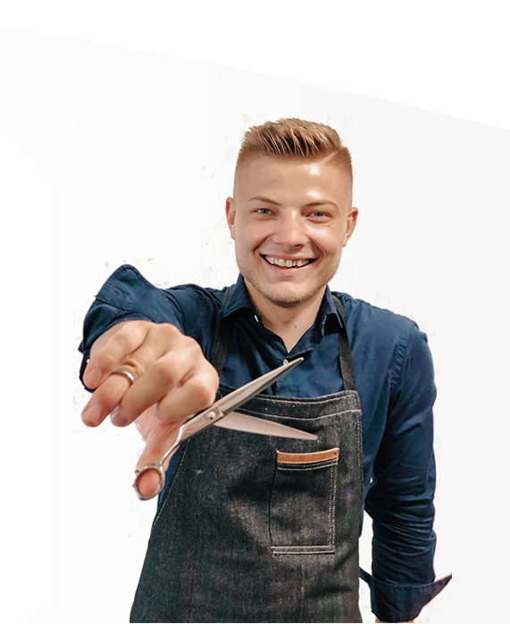

Josef Plesl
K práci kadeřníka jsem se dostal díky mým sestrám a v této profesi jsem se našel. Začalo mě to bavit a naplňovat.Nejdřív jsem se specializoval na pánské střihy, než jsem se setkal s Janem Špilarem, který mě naučil stříhat a barvit ženy v jeho kadeřnictví Střihoruký Edward,kde jsem pracoval téměř 3 roky.
Snažím se,aby se u mě moji klienti cítili v pohodě a odcházeli 100%spokojeni. V tuto chvíli se nacházím ve Studiu 51 na Hybešově ulici v Brně,kde nabízíme kvalitní služby. Těšíme se na vaši návštěvu!